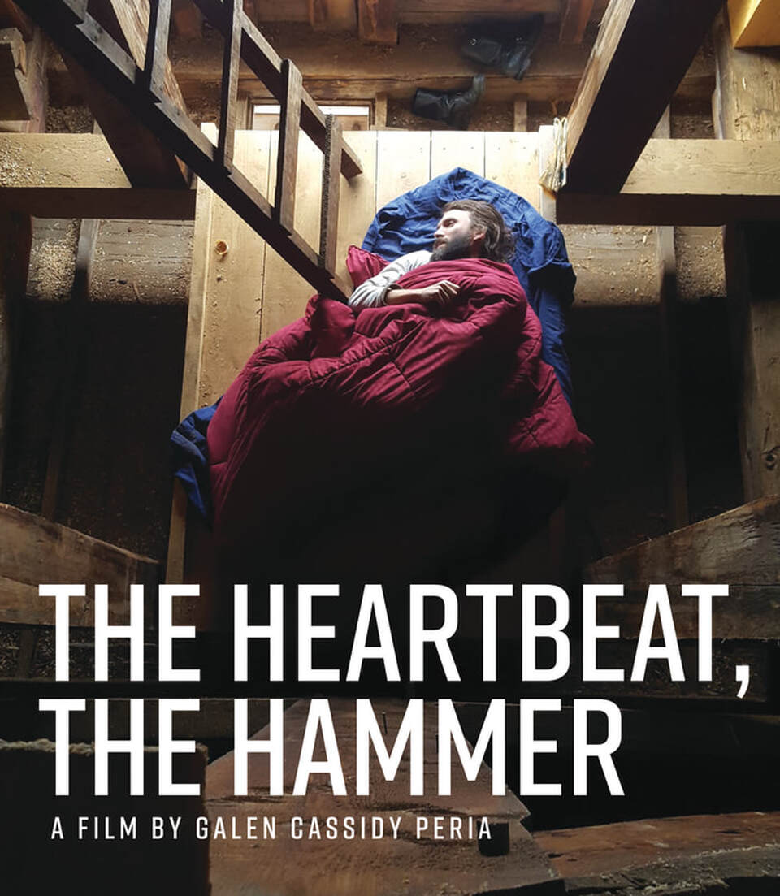
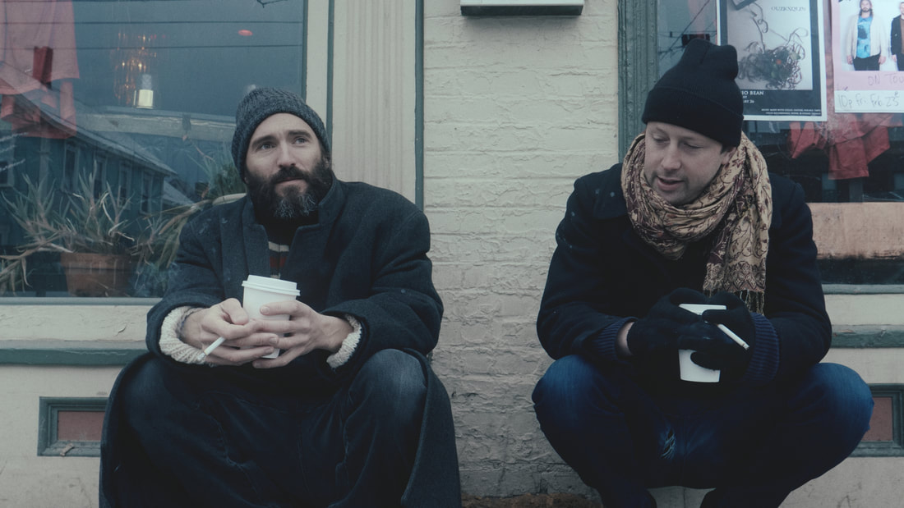
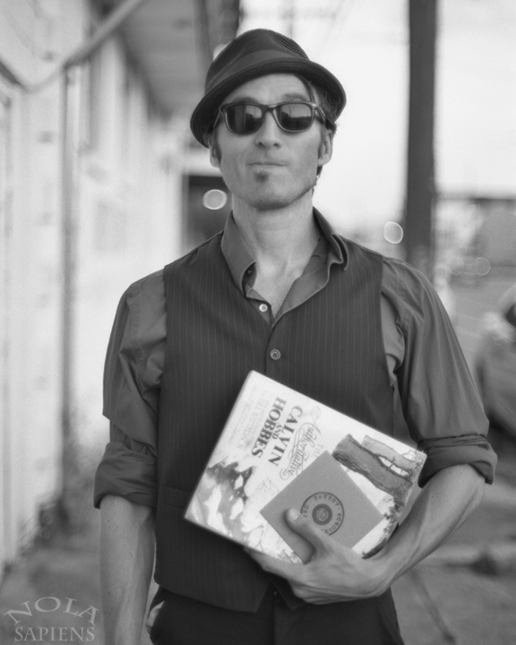
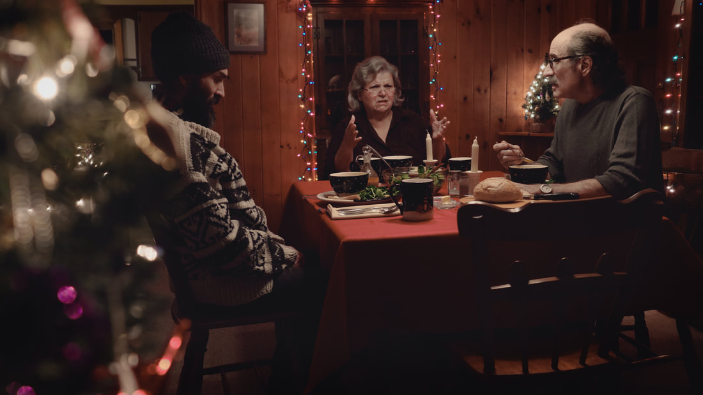
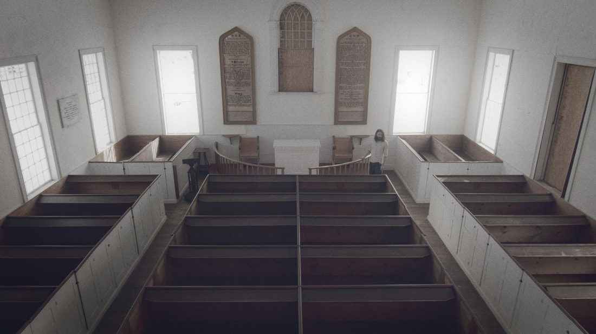

A Film by Galen Cassidy Peria
Official Trailer
No one has seen Lee in years. Then one snowy night just before Christmas he arrives at the doorstep of a friend. Next comes a visit to his parents. No one is quite sure where he has been and Lee seems to be unsure himself. As he traverses the country on a poetic and uncertain ritual-journey in pursuit of something lost, we follow him through the key places and among the important family and friends of his former life. “The Heartbeat, The Hammer” is the story of one man’s journey in search of not himself, but everything else.

“The Heartbeat, The Hammer” is a feature length narrative film written and directed by Galen Cassidy Peria. The initial film production was incubated and launched in partnership with United Bakery Records of New Orleans, LA. Produced by Peria and Hugh Mackey (also serving as director of photography) it was filmed in a true spirit of independent cinema on a shoestring budget in small units over the course of several years, often utilizing a crew of three or less, and filming on borrowed and “stolen” locations as much as borrowed time. The film features musical performances and cameos by a number of artists connected with United Bakery including Maggie Belle, Shane Sayers, Liam Conway, and Benjamin Aleshire. The film is currently in the final stages of post-production and a 2026 release is anticipated.

Galen Cassidy Peria
Galen Cassidy Peria is a New Orleans, LA based song-finder, wordsmith, film buff, histrionic, and excitable drinker. As a member of Vermont Joy Parade he toured the United States and Europe extensively between 2008–2014, starring alongside his bandmates (and Jared Leto) in the Vivian Strosberg documentary, “The Clock Tick and The Heartbeat”.
In 2015 he helped found United Bakery Records and became one of their debut recording artists (in addition to “The Tumbling Wheels” and Shane Sayers) with his release of, “Duke Aeroplane & The Wrong Numbers: Higher Ground”. He has previously collaborated with Hugh Mackey as lead actor in Mackey’s 2010 feature film, “Ties”, and as actor and director with his own acclaimed short films, “Elephant Shoes” and “Corporate Piracy” (with Mackey as Director of Photography).

Hugh Mackey
Hugh Mackey is a videographer, photographer, editor, writer, and whatever else creativity demands; a journeyman maker of images in service of storytelling and education. He has over fifteen years of experience working on short films, music videos, commercials, documentaries, and live events. He currently works at the NYU Stern School of Business, creating educational media that combines high production values with effective learning design. And if you keep an eye out, you may even see him act from time to time.

Credits
Stills
{kind=link}
{kind=link}
{kind=link}
{kind=link}
{kind=link}
{kind=link}
{kind=link}
{kind=link}
← Drag the strip · click a frame to enlarge →